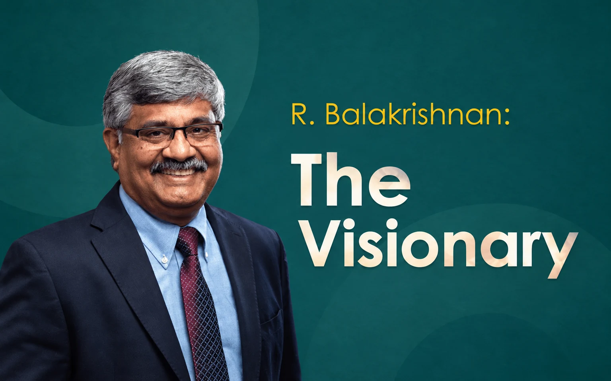

Missing Memories
R. Balakrishnan: The Visionary

An IAS officer of 1984 batch Dr R. Balakrishnan is a great visionary. Hailing from Madurai in Tamil Nadu he was a post graduate in Tamil Literature with Diploma in Journalism and was the first to appear Civil Services in Tamil and crack it at the first chance.
Before joining civil services he was a sub editor in a newspaper. He was allotted the Odisha cadre in IAS and Odisha became his second home. He is a reputed poet and lyricist in Tamil. Besides, he is a researcher with interest in Indology. As an Indologist he has done in depth research on Indus Valley Civilisation and his articles got published in national and international journals.
His initial postings in remote areas of Odisha coupled with his interest in language, literature and culture made him fond of Odisha’s rich history and culture. He has done some commendable works on Odisha too. His oratory skills get him to deliver lectures in different reputed institutions in different parts of the country. He belongs to a rare breed of bureaucrats who have a passion for art, literature and culture besides doing their job in administration.
I had heard about him when he was Sub Collector in Jajpur in the early part of his career and had done some good work during his tenure. When he was Secretary of the Culture Department he organized a joint poetry meet in Chennai with selected poets from Odia and Tamil languages.
It was around 2001 and Aswini Kumar Mishra, a poet and an OAS officer, was the Secretary of Odisha Sahitya Academy. I was one of the poets invited to attend the event. There I saw Shri Balakrishnan in action for the first time. He was found to be very much involved in organizing the event. It was very close to his heart. At times he was very restless and Shri Mishra was the receiving end of his tantrums for any deviation or deficiency. The event was overall a success and he himself recited his Tamil poem along with others.
After his successful second stint as Deputy Election Commissioner in the Election Commission, he returned to Odisha and became Principal Secretary, Finance. Then I was in the Planning and Coordination Department and had occasions to meet him regarding preparation of the budget. On promotion, he became the Development Commissioner. Few months before that, I had left the P & C Department and was posted as Director, RMSA under the School and Mass Education Department. However, I didn’t find a congenital atmosphere to work there and one day met the Chief Secretary to apprise my plight there. It was transpired that the new Development Commissioner was interested in taking me back to the P & C Department as some of the work I was looking after got neglected after my departure. I was more than happy.
Very soon my transfer order came out and I came back to my old department. Then I came in close contact with him. As a person he was very warm and affectionate. He was a man of ideas and always tried to do something new. After his joining he wanted the department to be rechristened as Planning & Convergence Department in place of Planning & Coordination Department with thrust on convergence in the planning process. Odisha became the first state to have a convergence department.
He started a unique experiment in inviting eminent persons from various walks of life to deliver lectures as a part of Odisha Knowledge Hub Lecture Series. During the Nabakalebar of Lord Jagannath he insisted upon the documentation of the entire event and finally it came out to be very handy. He also arranged documentation of the disaster management system of the State during cyclone Titli and Fani, which was applauded at national and international level.
For digitisation of Odia books, mostly old books and manuscripts he formulated the idea for establishment of Odisha Virtual Academy. He enhanced the budgetary allocations of the Culture Department and got disappointed when things didn’t move as per his expectations.
A Critical Gap Fund for the district plan was introduced during his tenure. He managed to bring Nabakrushna Choudhury Institute of Development Studies from Higher Education Department to P & C Department to provide policy support to the state government in the development paradigm. Through this he launched the Millet Mission, which became a very successful intervention in the long run. As Finance Secretary he took a number of steps to make the budget more people centric and the participatory process more meaningful.
He is a perfectionist but for implementation of his ideas he very much depends upon his subordinates and he has no patience for the nitty gritty of the work. He always focuses on the outcomes. He is a very noble soul and never harbors grouse against anyone or tries to harm anybody. One can never fail to notice him in a crowd and afford to forget him thereafter.
Leave a thought
No account needed. Comments are reviewed before they appear. Your name and approved comment will be public.